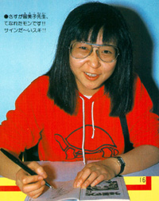
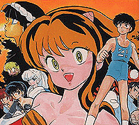
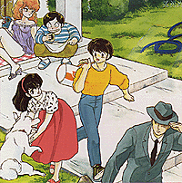
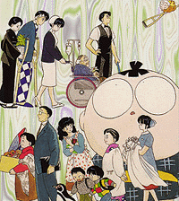
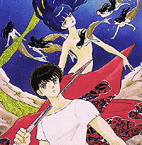
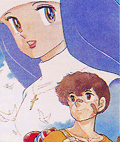
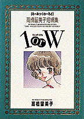
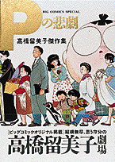
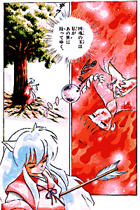

Rumiko Takahashi
|
Rumiko Takahashi |
|  |
Senza ombra di dubbio, posso dire che Rumiko Takahashi (N.S.D.) è la mia autrice preferita in assoluto, vorrei quindi dedicarLe una paginetta biografica, con una lista dei lavori che ha fatto oltre Ranma. Rumiko Takahashi (la più famosa e più tradotta autrice donna di fumetti, con oltre 50 milioni di copie stampate dei suoi volumi), è nata nel 1957 a Nigata. I suoi primi passi da mangaka ha cominciato a muoverli alla scuola di Kazuo Koike, l'autore di "Crying Freeman". Le sue influenze principali includono il folklore, le novelle di Yasutaka Tsutsui ed i comics americani Marvel per quanto riguarda l'azione. Nel 1978, all'età di 21 anni, ha avuto l'opportunità di passare al professionismo debuttando con diverse storie brevi e vincendo il concorso della casa editrice Shogakukan come miglior nuovo artista. Da lì in poi, ogni sua serie è stata un successo sempre maggiore, trasposta in serie TV e lungometraggi, incontrando notevole successo non solo in Giappone ma anche all'estero. |
"Maison Ikkoku" (da noi conosciuta come "Cara Dolce Kyoko"), è la serie successiva della Takahashi e prende una direzione completamente diversa dalla precedente, riuscendo anche ad incrementare notevolmente il numero di lettori adulti. Iniziata nel 1980 sulla rivista Big Comic Spirit, Maison Ikkoku è una storia realistica e verosimile sulle problematiche scolastiche, lavorative ed amorose dello studente di college Yusaku Godai. La storia è largamente basata sull'esperienza vissuta in prima persona dalla Takahashi quando era studente e condivideva con altri un economico alloggio. Maison Ikkoku è la lunga storia romantica di come Godai, gradualmente, riesce a vincere il cuore della sua amministratrice di condominio (vedova), la dolce e bella Kyoko Otonashi.
Con "Ranma Nibunnoichi", la Takahashi cambia ancora una volta il suo target, tornando sulle pagine di Shonen Sunday. Nonostante questo, Ranma è divenuto incredibilmente popolare anche tra le giovani ragazze. Al contrario di Urusei Yatsura, ma come in Maison Ikkoku, la storia di Ranma si evolve lungo tutto l'arco della sua pubblicazione, con episodi collegati tra loro da una storia di fondo, a parte qualche piccola eccezione. Dato che questo sito è completamente dedicato a Ranma, non mi ci soffermo oltre in questa pagina.
Nel mangadom (l'industria del manga), Rumiko Takahashi è famosa per la sua educazione e puntualità. Ecco più o meno quello che lei pensa, con sua stessa sorpresa, anche dei suoi lettori occidentali: "Dal momento che nei miei manga parlo spesso della vita quotidiana giapponese, delle tradizioni e delle festività del Giappone, a volte mi chiedo se un lettore americano stia veramente capendo ciò che legge". Nel 1994, la Takahashi ha visitato la "San Diego Comic Con", dove è stata osannata da centinaia di fans, ricevendo come riconoscimento l'"Inkpot Award". La sua fama sta continuando a crescere e questo, a noi, non può che fare piacere...
I Lavori di Rumiko Takahashi
Diamo ora una rapida occhiata agli altri lavori della Takahashi, a parte Ranma. Come si può vedere anche da una descrizione così sommaria, la produzione di Rumiko Takahashi è riuscita a spaziare tra generi molto diversi tra loro, dalla commedia romantica all'horror ecc. Tra parentesi c'è il titolo dell'eventuale uscita in Italia di ogni opera. Se il titolo non c'è, significa che in Italia non è ancora uscito.
Urusei Yatsura (Lamù)
|  |
La serie inizia con l'imminente invasione della terra da parte di alcuni alieni. Il capo degli invasori, si mette daccordo per una gara in cui, se un terrestre riesce a battere un'aliena raggiungendola in corsa, loro fermeranno l'invasione. Il terrestre prescelto, Ataru Moroboshi, inizialmente si rifiuta di partecipare, finché non scopre che la campionessa degli alieni è Lamù, una ragazza molto carina. Ataru deve riuscire a toccare i cornini di Lamù (lui tenta più che altro di toccare le sue grazie) ma fallisce miseramente finché la sua ragazza, Shinobu, gli promette di sposarlo se vince. Ispirato da questa dichiarazione, Ataru riesce a toccare le corna di Lamù ricorrendo al trucco di rubarle il bikini in modo da impacciarla nella sua corsa. A causa di un grosso malinteso, da questo punto in poi, Lamù è convinta che Ataru voglia sposarla e le cose cominciano ad andare in maniera sempre più folle episodio dopo episodio. |
Maison Ikkoku (Cara dolce Kyoko)
|  |
Godai Yusaku è un ragazzo che ha fallito diverse volte gli esami di ammissione all'università, e vive nella stanza numero 5 di una casa con stanze in affitto chiamata Maison Ikkoku (Ikkoku kan), molto economica. Tra gli altri abitanti della casa troviamo la festosa ubriacona Ichinose nella stanza 1, la sensuale Akemi Roppongi nella stanza 6 ed il misterioso Yotsuya nella stanza 4. Tutti questi affittuari sono soliti dare party "selvaggi" e rumorosi che impediscono a Godai di studiare. In questa specie di bolgia, arriva la nuova amministratrice del condominio, Kyoko Otonashi, da poco rimasta vedova. Godai si innamora subito di lei, ma non ha il coraggio di dirglielo. La storia segue lo sviluppo travagliato della loro relazione e degli eventi pazzi alla Maison Ikkoku. |
Rumic World e Rumic Theater
|  | Queste sono una serie di storie indipendenti. Originariamente erano uscite col titolo di "Rumic World", ma questo nome sembra essere stato accantonato nelle produzioni più recenti. Sono tutte molto ben fatte, e sono raccomandate a tutti coloro che vogliono collezionare più lavori della Takahashi. Notare che solo "Wondergirl" è una commedia, gli altri spaziano tra diversi generi. I Rumic Theater sono stati serializzati su Manga Vizion, Vol. 1 n. 1 a 6 e i Rumic World sono iniziati dal Vol. 1 n. 7. |
Mermaid Saga (La Saga delle Sirene)
|  |
La leggenda narra che mangiare carne di sirena, può donare l'immortalità. Nella realtà, la maggior parte della gente, muore in maniera orribile ed il resto si trasforma in un mostro. Soltanto poche persone, come Yuta e Mana, sono in grado di ricevere la vera immortalità. Ma cosa accade quando non vuoi più rimanere un immortale? Scoprite cosa succede quando la vita continua ad andare avanti, e avanti, e avanti... La Saga delle Sirene include:
|
1 Pondo no Hukuin (One Pound Gospel)
|  | Conosciuta anche da noi col titolo inglese, questa è una storia di boxe e amore "impossibile". Kosaku Hatanaka è un pugile professionista che punta al titolo, ma il suo appetito incontrollabile gli rende difficile rimanere nei limiti di peso per la categoria. Se oltrepassa questo peso, la sua carriera può dirsi finita. Riuscirà una giovane novizia di cui si è innamorato, e che ancora non ha preso i voti, ad infondergli un po' di forza di volontà? |
1 or W
|
 |
La storia principale della raccolta, racconta di un giovane e pigro praticante del Kendo, una ragazza manager del Club di Kendo che muore affogata e diventa un fantasma, e di uno strano professore che muore anche lui affogato e "intercetta" il corpo di lei. Le altre storie sono sempre dei brevi racconti autoconclusivi pubblicati su varie riviste come Shonen Sunday o Puchi Comics, anche a distanza di anni. Anche questo, in Italia, ha mantenuto il titolo originale ed è stato pubblicato sempre dalla Star Comics su Storie di Kappa come facente parte della "Collana Rumic World". |
P no higeki
|
 |
"La tragedia di P" (è questa la traduzione del titolo), parla di una famiglia che vive in un condominio dove non è permesso avere animali domestici, e che si ritrova con un pinguino come ospite. In America è stato pubblicato insieme ai Rumic Theater. Anche in Italia è uscito sempre per la Star su Storie di Kappa, collana "Rumic Theater". |
Inuyasha
|  |
Il personaggio principale, è una ragazza di 15 anni, Kagome, che viene accidentalmente mandata indietro nel tempo fino al 16mo secolo, quando in Giappone c'era la guerra civile. Nel passato incontra Inuyasha, lo spirito mezzo uomo e mezzo cane che ha dormito per 50 anni, imprigionato dalla frecca scagliatagli da una ragazza e che lo ha inchiodato ad un albero. Kagome possiede un gioiello che ha il potere sopra gli spiriti come Inuyasha, ma che attrae anche le attenzioni degli spiriti cattivi. |
| Grafica, impaginazione e testi sono (c) di Francesco "Nibunnoichi" Giordano e non possono essere usati senza il consenso dell'autore. |